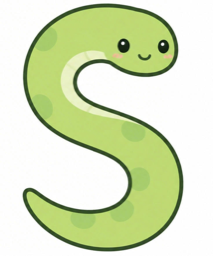
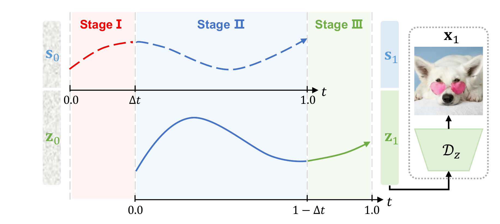

SFD at foundation-model scale
SeFi-Image brings semantic-first diffusion from smaller class-conditional settings into high-resolution text-to-image generation with 1B, 2B, and 5B model variants.

SeFi-ImageA Text-to-Image Foundation Model with Semantic-First Diffusion
Highlights
SeFi-Image brings semantic-first diffusion from smaller class-conditional settings into high-resolution text-to-image generation with 1B, 2B, and 5B model variants.
The semantic stream gives texture generation a cleaner structural anchor, allowing stronger reconstruction fidelity without making diffusion training harder.
The 5B model is trained with 125K A800 GPU hours and remains strong across GenEval, DPG, LongTextBench, CVTG-2K, and OneIG benchmarks.
Method
Semantic-First Diffusion separates high-level structure from texture details and lets the semantic stream move ahead by a small timestep offset. Texture generation then follows the semantic trajectory instead of denoising both signals in lockstep.

Semantic latents denoise first, giving the model an early structural anchor.
Semantic and texture streams denoise together, with semantics leading textures by a temporal offset.
Texture latents finish the last refinement stage before the final image is decoded.
Benchmarks
The main benchmarks cover prompt following, long-text rendering, visual text generation, and instruction alignment.
Object-focused prompt following and compositional reasoning.
Long text rendering across English and Chinese prompts.
Detailed prompt following over objects, relations, attributes, and global composition.
Character-level visual text generation, reported here as word accuracy.
Omni-dimensional English instruction generation across alignment, text, reasoning, style, and diversity.
Chinese instruction generation over alignment, text, reasoning, style, and diversity.
Showcases
Qualitative examples cover the main visual categories in the paper: natural scenes, text-rich layouts, character images, stylized generation, and portraits.
Wide natural scenes, weather, cities, animals, and free-aspect landscape framing.
Posters, signs, labels, maps, menus, and bilingual layouts with readable text.
Character-focused generation across close-ups, full-body layouts, fantasy scenes, and environmental shots.
Illustration, ink painting, plush toy, sticker sheet, sketch, and graphic-design styles.
Close-up and environmental portraits with varied lighting, pose, material, and composition.
Citation
Project citation for the current SeFi-Image manuscript.
@article{sefi2026sefiimage,
title = {SeFi-Image: A Text-to-Image Foundation Model with Semantic-First Diffusion},
author = {{SeFi-Team}},
journal = {arXiv preprint},
year = {2026}
}